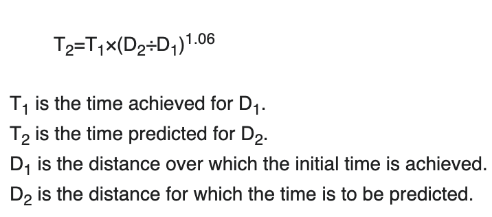

This calculator attempts to predict race times for specific distances using a previous race result for a different distance. For example, you can input your 5K PR and see a predicted 10K time.
This calculator adjusts predicted pace depending on the distance of the race being predicted. This means that your prediction for a 100 meter race will have a much faster pace than your prediction for a marathon race.
This calculator uses the formula
This formula was created by Peter Riegel, and it is widely accepted as being fairly accurate.
Calculator
Fill out all fields, even if you just put a zero.